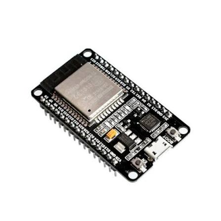
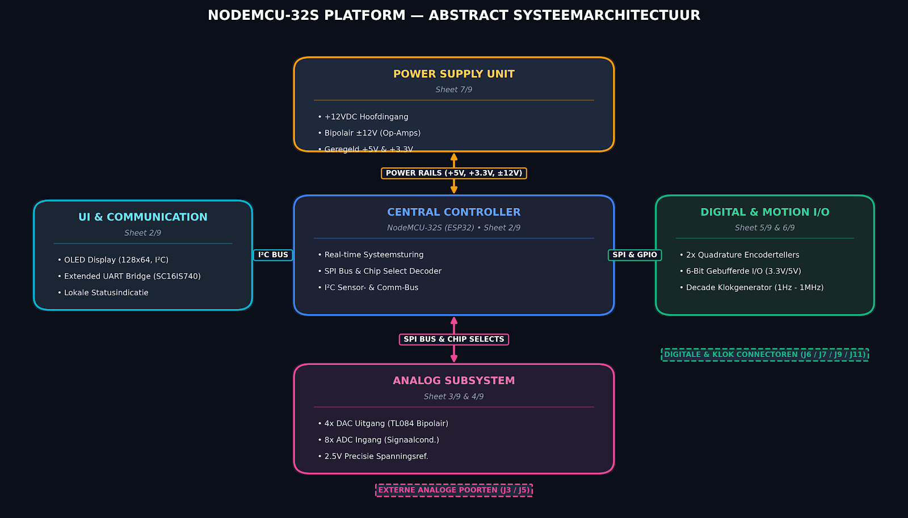
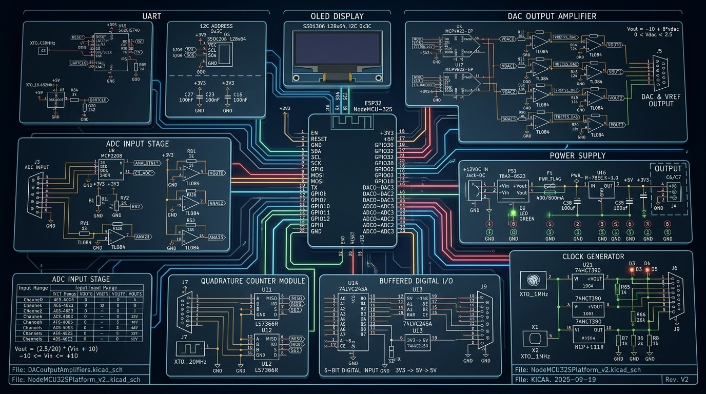

Systeemoverzicht NodeMCU-shield
In deze module wordt het NodeMCU-shield en zijn perifere componenten beschreven. De basis van het NodeMCU is een ESP-32 microcontroller.
Kenmerken van de ESP32

Figuur 1. ESP32-DevKitC
Microcontroller: Xtensa LX6 dual-core
Operating voltage: 3.3 V
Input voltage (recommended): 5 V
Input voltage (limits): 4.5-5.5 V
Digital I/O pins: 34 (waarvan 15 als PWM-uitgang)
Analog input pins: 18
Flash memory: 4 MB
SRAM: 520 KB
EEPROM: 0 KB
Clock speed: 240 MHz
Blokschema NodeMCU

Figuur 2. Blokschema NodeMCU
Figuur 3. Detail NodeMCUOverzicht van subsystemen
Microcontroller core (sheet 2/9): NodeMCU-32S-hostmodule dat randapparatuur aanstuurt via SPI, I2C en parallelle GPIO’s. Dit onderdeel bevat een SSD1306-OLED-display, een SC16IS740 I2C-naar-UART-bridge en een 74HC138 3-naar-8-decoder voor de SPI-chipselectsignalen (
CS_DAC01,CS_DAC23,CS_ADC,CS_QC0,CS_QC1).DAC-uitgangsversterkers (sheet 3/9): Twee MCP4922 dual-channel 12-bits SPI-DAC’s, samen vier kanalen, met TL084-opamps voor niveaushifting. Hiermee ontstaat een uitgebreid bipolair uitgangsbereik, gebaseerd op een MCP1525-precisiereferentie van 2,5 V.
ADC-ingangsversterkers (sheet 4/9): Een 8-kanaals MCP3208 SPI-ADC die signalen ontvangt van vier externe, niveauverschoven analoge ingangen via J3, twee onboard-kalibratiepotentiometers en twee analoge drukknoppen.
Quadraturetellers (sheet 5/9): Twee LS7366R-IC’s voor quadrature-encodertelling, geklokt door een externe oscillator van 20 MHz. De encoders zijn via een 74LVC245A-niveautranslator verbonden met de J7-encoderheader.
Digitale I/O (sheet 5/9): Gebufferde parallelle interfaces met een 6-bits 5V-naar-3,3V-ingangspoort (74LVC245A op J11) en een 6-bits 3,3V-naar-5V-uitgangsdriver (74HCTC245 op J9) met indicatie-leds.
Klokgenerator (sheet 6/9): Een zelfstandig timingsysteem met een oscillator van 1 MHz en 74HCT390-dubbele decade-rippledelers. Dit levert deel-frequenties tot 1 Hz op connector J6.
Voeding (sheet 7/9): Een hoofdvoeding van +12 VDC voedt een buckconverter (R-78E5.0-1.0) voor de primaire +5V-rail en een LDO (NCP1117LPST33) voor +3,3 V. Een geïsoleerde TBA2-0523 DC/DC-module met L78L12- en L79L12-regelaars genereert schone \(\pm 12\) V-rails voor de analoge opamps.